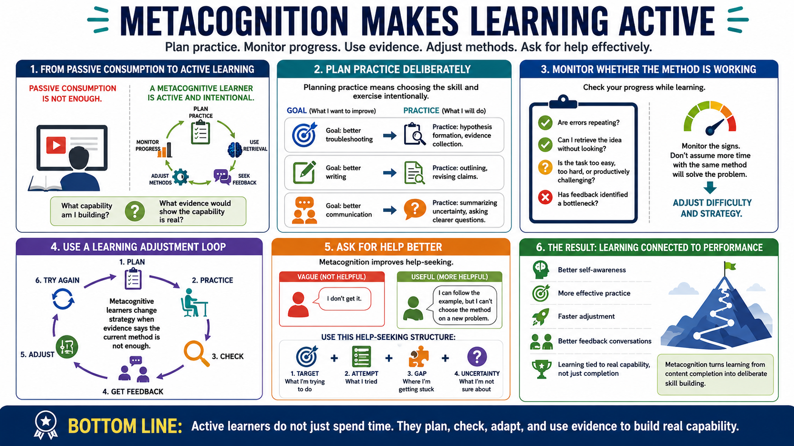

Metacognition for Learning and Skill Development
Connecting to LMS... Progress: in progress

Narration
Metacognition makes learning more active. Instead of passively consuming content, the learner plans practice, monitors progress, uses retrieval, spaces review, seeks feedback, and adjusts methods. The learner asks what capability is being built and what evidence would show that the capability is real. This keeps learning connected to performance instead of completion.
Planning practice means choosing the skill and the exercise deliberately. If the goal is better troubleshooting, practice may focus on hypothesis formation or evidence collection. If the goal is better writing, practice may focus on outlining or revising claims. If the goal is better communication, practice may focus on summarizing uncertainty or asking clearer questions.
Monitoring progress means noticing whether the current method is working. Are errors repeating? Is the learner retrieving the idea without looking? Is the task too easy, too hard, or productively challenging? Has feedback identified a bottleneck? A metacognitive learner adjusts difficulty and strategy instead of assuming that more time with the same method will automatically solve the problem.
This also helps learners know when to ask for help. Asking for help is more effective when the learner can name the target, the attempt, the gap, and the uncertainty. Instead of saying, I do not get it, the learner can say, I can follow the example, but I cannot choose the method on a new problem. That is a much better starting point for useful feedback.